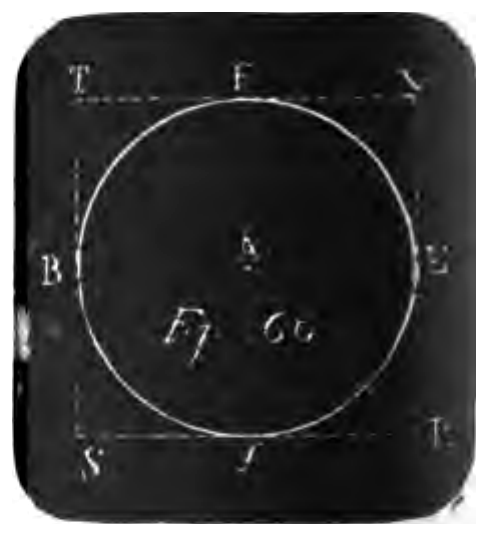
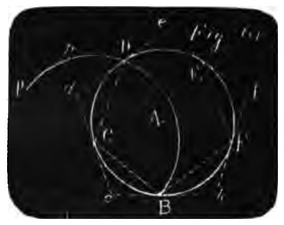

§§ 128–134: Inscribed & Circumscribed Regular Polygons¶
128. Problem. To inscribe in a given circle a regular polygon among those which can be inscribed therein with compass and straightedge.
Solution. Divide the circumference into a number of equal parts equal to the number of sides of the polygon desired (§§ 27, 29, 30, 31, 32, 38, 40, 41, 42, 53, 57, 60, 63). The points of division will be the vertices of the regular polygon sought (§ 124), and the chords of the arcs will be the sides.
Demonstration. All the sides are equal, because they are chords of equal arcs. The angles are also equal, since being at the circumference they subtend an equal number of equal arcs (21, Book III). Thus we have a regular polygon of the desired number of sides inscribed in the circle (def. 1, Book III).
129. Since the parts (§ 57) into which this
f. 0096 · p. 71circumference can be divided with only three points taken outside it and at most six openings of the compass (§ 59) number 240, there will be as many regular polygons that can be inscribed in the circle with these three points and six compass openings as there are distinct numbers that divide 240 exactly. Now these numbers are the following: 2, 3, 4, 5, 6, 8, 10, 12, 15, 16, 20, 24, 30, 40, 48, 60, 80, 120, 240. Therefore, omitting 2, one may inscribe a regular polygon of 3 sides, of 4 sides, of 5, of 6, of 8, of 10, etc., up to the polygon of 240 sides.
130. If the number of sides of the polygon desired happens to be one of those for which the circumference was divided in §§ 27, 30 and following, for example 12, divide the circumference into 12 equal parts (§ 31); the two endpoints of each of these will be at the vertices of the angles of the polygon desired; or, what is the same, the chords of these arcs will be the sides of the polygon.
If the number of sides of the polygon desired is not expressly found in the Problems of the Second Book, as for instance if one wished to construct a polygon of sixty sides; duplicate, triplicate, or quadruple, etc. this number, until one arrives at one of the numbers expressly contained in the Problems; in the example adduced, duplicate 60 and one obtains 120, which number is expressly found at § 42, where the manner of dividing the circumference into 120 equal parts is given. Taking these parts two by two will furnish us 60 equal arcs, whose chords will be the 60 sides of the polygon desired. Had it been necessary to triplicate the number, as in the case where a polygon of 16 sides was desired, the circumference then being divided into 48 parts (§ 38), triple 16, one will have to take three of these arcs to obtain an arc which is the sixteenth part of the circumference; each of these equal arcs will have for chord a side of the polygon of sixteen sides and angles.
131. Problem. About a given circle \(BCDd\) (fig. 59) to circumscribe an equilateral triangle (§ 124).
Solution. Make equal to the radius of this circle \(AB = BC = CD\); and equal to \(BD = BL = DL = Dd = DN = dN = dM = BM\). The three points \(L, M, N\) will be the vertices of the equilateral triangle circumscribed about the circle.

Demonstration. Triangle \(BDd\) is equilateral and inscribed in the circle (§§ 29 and 131). Triangles \(DLB\), \(NDd\), \(dBM\) have their sides equal to the sides of this triangle; therefore their angles will be equal (8, Book I). Hence the three angles \(NDd\), \(dDB\), \(BDL\) will equal the three angles of the inscribed triangle, that is, two right angles (32, Book I). Therefore \(NDL\) will be a straight line (14, Book I). The same will be proved of the other two, \(LBM\), \(NdM\). Moreover, each of them will be double side \(BD\), and hence equal to one another. Therefore triangle \(LMN\) is equilateral. Further, since angles \(NDd\), \(DLB\) are equal, \(Dd\) will be parallel to \(LB\) (29, Book I), that is, to \(LM\). Now points \(N, A, B\) lie in a straight line perpendicular to \(Dd\) (§§ 13 and 14). Hence \(AB\) is also perpendicular to \(LM\) (27, Book I). Therefore \(LM\) is tangent to the circle (16, Book III). The same will be proved of the two \(NL\), \(NM\). Therefore triangle \(NLM\) is equilateral and circumscribed about the circle (def. 2, Book IV).
132. Problem. About a given circle (fig. 60) to circumscribe a square.
Solution. Divide its circumference into four equal parts at points \(B, F, E, f\) (§ 27). With these points taken as centers and with radius \(AB\), mark arcs intersecting at \(R, S, T, V\). These last four points will be the vertices of the square circumscribed about the circle.


Demonstration. Angle \(TBA\) is right (§ 100). In the same manner angle \(SBA\) is shown to be right. Hence \(TBS\) is a straight line (14, Book I) perpendicular
f. 0098 · p. 73to diameter \(BE\), and therefore tangent to the circle (16, Book III). The same is shown of the others \(TFV\), \(VER\), \(RfS\). Furthermore, since triangle \(BFT\) has its sides equal respectively to the sides of triangle \(BFA\), angle \(BTF = BAF\) (8, Book I); hence right (§ 27). The same is shown of the other angles \(V, R, S\). Therefore etc.
133. About a given circle to circumscribe a regular pentagon.
Solution. Let circle \(BDE\) be described with radius \(AB\) (fig. 61). Divide its circumference into five equal parts (§ 40) at points \(B, C, D, E, F\). With center at one of these points \(C\) and radius \(CB\), describe the semicircle \(BDP\) (§ 64). Taking as center point \(E\) opposite arc \(CB\), with radius \(EC\) cut arc \(BDP\) at \(p\). With radius \(Pp\) and centers \(B, C, D, E, F\), mark arcs intersecting at \(b, c, d, e, f\). These last points will be the vertices of the angles of the pentagon circumscribed about the circle.


For the demonstration of this Problem, the demonstration of the following will serve.
134. Problem. Given the vertices of a regular polygon inscribed in the circle (fig. 62); to find the vertices of a similar regular circumscribed polygon.

Solution. Let points \(B, C, D, E\), etc. be vertices of the polygon inscribed in the circle. With one of them \(C\) taken as center, and with the distance of two of them \(CB\) taken as radius, describe the semicircle \(BDP\) (§ 64). With centers \(B\) and \(C\), and with radius \(BD\), mark two arcs intersecting at \(V\). (In the case of the pentagon (fig. 61), point \(V\) coincides with point \(E\).) With this same radius \(BD\) and center \(V\), cut circumference \(BDP\) at \(p\). With radius \(Pp\) and centers \(B, C, D, E\), etc., vertices of the inscribed polygon,
f. 0099 · p. 74describe arcs intersecting at points \(b, c, d, e\), etc. These will be the vertices of the regular circumscribed polygon.
Demonstration. By § 22 we have \(pP \cdot VC = (CD)^2\), that is, \(cC \cdot BD = (BC)^2\). Hence (17, Book VI) \(BD : BC :: BC : Cc\). But \(BC = CD\) and \(Bc = cC\). Therefore in the two isosceles triangles \(BCD\), \(BcC\) all the sides will be proportional. Hence (5, Book VI) angle \(cCB = CBD\). Therefore the two \(cC\), \(BD\) will be parallel (28, Book I). In the same manner it will be proved that \(Cd\) is also parallel to the same \(BD\). Therefore points \(c, C, d\) will lie in the same straight line. But since \(BC = CD\), radius \(AC\) is perpendicular to \(BD\) (§ 14). Hence also to \(cd\) (29, Book I). Therefore \(cd\) is tangent (16, Book III) at its midpoint \(C\). The same is shown of \(de = cd\) at its midpoint \(D\), and so of the others. Moreover, these will be as many in number as there are points \(B, C, D, E\), etc. Therefore etc. (def. 2, Book IV).